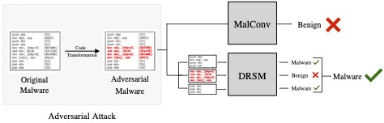
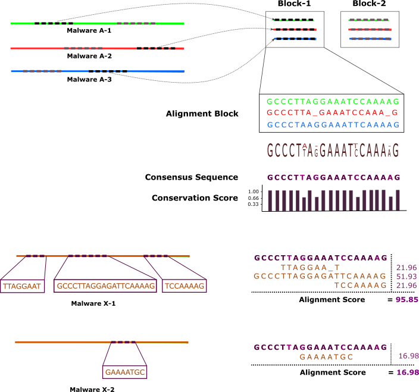
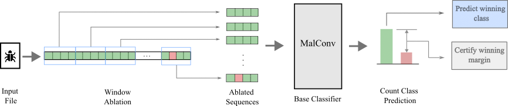

Shoumik Saha
I am a second year Ph.D. student in Computer Science at University of Maryland. I am working as a Graduate Research Assistant under Dr. Soheil Feizi, and working on the intersection of Machine Learning and Security. Currently, I have multiple projects where we are focusing on the robustness and reliability of LLMs and Multi-modal LLMs.
In my first year of PhD, I worked on a project with Prof. Tudor Dumitras and Prof. Soheil Feizi. In that project, I leveraged de-randomized smoothing technique in the domain of malware detection. This paper got accepted into ICLR 2024.
Before my Ph.D. journey, I was working as a lecturer in the Department of Computer Science and Engineering at United International University, Bangladesh, and as a research assistant in the Data Science and Engineering Research Lab, BUET, where I worked with professor Dr. Mohammed Eunus Ali and assistant professor Dr. Atif Hasan Rahman.
Before joining these workplaces, I received a B.Sc. degree in Computer Science and Engineering from Bangladesh University of Engineering and Technology. In my final year, I did my thesis on malware security. My research interest sits broadly on Computer Security, and Machine Learning. I enjoy studying and designing methods to increase computer security and privacy.
Apart from academic activities, I have always been passionate about photography. I like to stay physically active by going to the gym and playing soccer. I also like traveling and roaming around new places. Now and then I try to get a break from my busy schedule and set out for a tour with friends and family.
If you'd like to know more about my work and (or) collaborate, please get in touch! You can find my CV here.
Shou-mik (Shoumik) Sha-ha (Saha). Shoumik means the Sun in Bengali. Click the audio player below to listen to the pronunciation of my name.
Pronouns: He/him
- My First-author paper 'DRSM' got accepted in ICLR 2024
- My First-author paper 'MAlign' got accepted in Computers & Security Journal
- Completed my Research Assistantship for Summer 2023 at Maryland Cybersecurity Center (MC2) lab.
- Collaborated with Prof. Soheil Feizi and wrote a paper out of class project on static malware classifier (arxiv).
- Achieved A's on all courses of 1st semester (Computer and Network Security, Foundations to Deep Learning)
- Joined the MC2 lab (under Prof. Tudor Dumitras) of University of Maryland
- Paper on MALIGN: Adversarially Robust Malware Family Detection using Sequence Alignment has advanced to the 2nd round of 43rd IEEE Symposium on Security and Privacy
- Working on a project of detecting Atrial Fibrillation from PPG signal, funded by ICT division, Bangladesh
- Attended TOEFL iBT exam and scored 111 out of 120 (R - 28, L - 28, S - 27, W - 28)
- Attended Graduate Record Examination (GRE) and scored 321 out of 340 (Quant - 167, Verbal - 154)
- Successfully conducted ‘Discrete Mathematics’ and Digital Logic Design Laboratory’ courses for the Summer 2021 semester at UIU
- Joined United International University as a lecturer
- Joined Data Science and Engineering Research Lab, BUET as a research assistant
- Completed graduation on Computer Science and Engineering from Bangladesh University of Engineering and Technology (BUET)
Experience
Graduate Research Assistant
I am working with Prof. Soheil Feizi. Currently, we are working on the reliability and robustness of Machine Learning models, especially, Large Language Models (LLMs) and Multi-modal LLMs.
Graduate Research Assistant
I worked under the supervision of Prof. Tudor Dumitras. I explored both the 'machine learning for security' and 'security for machine learning' during this work.
Lecturer
Being inclined to teaching from a young age, I find it a rewarding profession which gives an opportunity to shape the life of others and pursue one’s passion for a lifetime. I love to interact and connect with my students. Moreover, I am very comfortable and competent with public and informative speaking.
Research Assistant
In my final year, I started doing my thesis work. Since then, I am very passionate and interested about research. It makes me think differently by engaging myself in the creation of new knowledge. I love the challenges and tests to think of new ideas, new reasons, and new possibilities. After my graduation, I joined one of the most reputed research labs of my university.
Education
University of Maryland
CGPA: 3.74/4.00
Bangladesh University of Engineering and Technology
CGPA: 3.66/4.00
Notre Dame College
CGPA: 5.00/5.00
St. Gregory's High School
CGPA: 5.00/5.00
Research
DRSM: De-Randomized Smoothing on Malware Classifier Providing Certified Robustness
Machine Learning (ML) models have been utilized for malware detection for over two decades. Consequently, this ignited an ongoing arms race between malware authors and antivirus systems, compelling researchers to propose defenses for malware-detection models against evasion attacks. However, most if not all existing defenses against evasion attacks suffer from sizable performance degradation and/or can defend against only specific attacks, which makes them less practical in real-world settings. In this work, we develop a certified defense, DRSM (De-Randomized Smoothed MalConv), by redesigning the de-randomized smoothing technique for the domain of malware detection. Specifically, we propose a window ablation scheme to provably limit the impact of adversarial bytes while maximally preserving local structures of the executables. After showing how DRSM is theoretically robust against attacks with contiguous adversarial bytes, we verify its performance and certified robustness experimentally, where we observe only marginal accuracy drops as the cost of robustness.
To our knowledge, we are the first to offer certified robustness in the realm of static detection of malware executables. More surprisingly, through evaluating DRSM against 9 empirical attacks of different types, we observe that the proposed defense is empirically robust to some extent against a diverse set of attacks, some of which even fall out of the scope of its original threat model. In addition, we collected 15.5K recent benign raw executables from diverse sources, which will be made public as a dataset called PACE (Publicly Accessible Collection(s) of Executables) to alleviate the scarcity of publicly available benign datasets for studying malware detection and provide future research with more representative data of the time.

MALIGN: Adversarially Robust Malware Family Detection using Sequence Alignment
Taking inspiration from bioinformatics, we model a malware like a DNA sequence or a genome. Just as DNA sequences are made of only four types of nucleotides, malwares are sequences of bits, and modifications of malwares mirrors accumulation of mutations in genomes during evolution. Genomes contain critical regions for the survival of the organism, such as, protein coding genes where mutations may be lethal. Similarly, malwares contain code blocks that are difficult to modify without altering its functionality. If we can translate a malware in terms of the basic building blocks, our detector will be robust by design that cannot be evaded without fundamentally changing the malware.
We propose MALIGN, a novel malware family detection approach inspired by genome sequence alignment. MALIGN encodes malware using four nucleotides and then uses genome sequence alignment approaches to create a signature of a malware family. Unlike previous approaches based on sequence alignment, our method uses a multiple whole-genome alignment tool that protects against trivial adversarial attacks such as shuffling of code blocks. Our approach outperforms state-of-the-art machine learning based malware detectors and demonstrates robustness against trivial adversarial attacks. MALIGN also helps identify the techniques malware authors use to evade detection.
Methods: Byte encoding, Multiple sequence alignment, Consensus sequence and score generation, Regression modelTools: Sibeliaz, C, C++, Python, Keras, Pytorch

Is Machine Learning Sufficient for Malware Detection in the Wild?
We presented a quantitative study of how sandbox traces differ from real-world ones, and how it impacts machine learning models. We identified this distribution shift and proposed a solution for ML models that boosted the TPR from 14% to 20%@1%FPR.
Adversarial Robustness of Learning-based Static Malware Classifiers
Though static raw-byte based malware classifier and adversarial patch attack against them have been out there for a long time, we proposed the Universal Adversarial Patch (UAP) attack for the first time, where the attacker does not have to generate an input-specific patch everytime. Such attack enables an attacker to generate patch in constant time O(1). We evaluated this attack on MalConv model and one single patch could evade the model in ~80% cases.
Furthermore, we proposed a defense against such attack. We used de-randomized smoothing technique that has been heavily used in computer vision, but not in malware domain. For the first time, we proposed a malware detection model that can provide certified robustness. We proposed smoothed-MalConv which has better robustness against patch-based attack and has no drop on standard accuracy, unlike other defense models.
Methods: FGSM (Fast Gradient Signed Method) Patch Attack, Universal Adversarial Patch (UAP), De-Randomized Smoothing
Detecting Atrial Fibrillation from PPG Signal using Similarity based Self-supervised Learning
Atrial fibrillation (AF) is the most prevalent form of arrhythmia, a type of abnormality characterized by irregular beating of the two upper chambers (the atria) of the heart. AF can often go unnoticed for a long time and can lead to severe complications such as stroke and heart failure if not controlled at an early stage. Hence, early diagnosis of AF can significantly reduce the risk of death from the above complications. The increasing popularity of smartwatches or fitness trackers equipped with photoplethysmography (PPG) sensors opens a new opportunity for developing non-invasive continuous monitoring of AF from PPG signals. Taking inspiration from SimCLR: a contrastive learning framework, we have proposed a model that can detect AF in patients from their similarity in a self-supervised way.
Methods: Noise cancellation, Contrastive learning, Poincare plot
Scholarships and Achievements
-
Dean's FellowshipWas awarded Dean's Fellowship with full-fund Ph.D. offer from University of Maryland
-
Innovation FundWas awarded to my team for research by the ICT Division of Bangladesh Government
-
Merit StipendsAchieved stipends from BUET in five out of seven terms for excellent result
-
Dean's AwardGot award in Junior year for extraordinary result
-
Talent-Pool ScholarshipAchieved this scholarship from Government in Senior High School
-
Talent-Pool ScholarshipAchieved this scholarship and full tuition fee waiver from Government in Junior High School
Project
-
Website development for Flight and Hotel Room Reservation System
-
Software development for Football Club Management
-
Micro-controller Project for Real-time Detection of Car Theft
-
Multiplayer Shooting Game
-
Tic-Tac-Toe
-
Miscellaneous
- Developing a C compiler using lexical analyzer and parser designing tools
- Designing a 4-bit Computer Model using Atmel Studio, MIPS architecture
- Simulating Mancala game in AI lab course
- Implementing and modifying some functionalities of XV6 Operating System.
- Modifying some functionalities of Computer Network in NS2.
Developed a website as my level-4/term-1 project where customers can book flight tickets, hotel rooms through card payment, and companies can update their page and manage bookings.
Tools: Django, SQLite
This application stores all information about the club (players, managers, games). Admin of the club can update, add and delete these information and generate graphs from statistics.
Tools: Java, JavaFX, Oracle Database
Can detect a car in real time and send a warning message with gps location to the owner's mobile for exceeding speed limit or crossing a safety zone. Even the owner can get the gps location of the car with a single message.
Tools: Arduino, GPS, GSM module, Sonar, LDR sensor
A second-year project, two players can connect from two different machines under the same network and play penalty shoot and save, where one will shoot and another will save.
Tools: Java, JavaFX, Java Networking
A first-year project, single player game with Mini-Max algorithm.
Tools: C, iGraphics, Artificial Intelligence
Skills
- C, C++
- Java
- Python
- C#
- SQL
- Assembly Language
- Matlab
- PyTorch
- Keras, Tensorflow
- Django
- Git, GitHub
- IntelliJ, PyCharm
- Netbeans, Codeblocks
- Android Studio, Visual Studio
- Oracle SQL Developer
- Proteus, emu 8086
- Jupyter Notebook
- NS2
- NumPy
- Pandas
- MatplotLib
- Scikit Learn
- HeartPy
- Latex, Overleaf
- Linux Shell Script
- HTML, CSS
- AWS EC2
- SSH Accessing to Remote Server